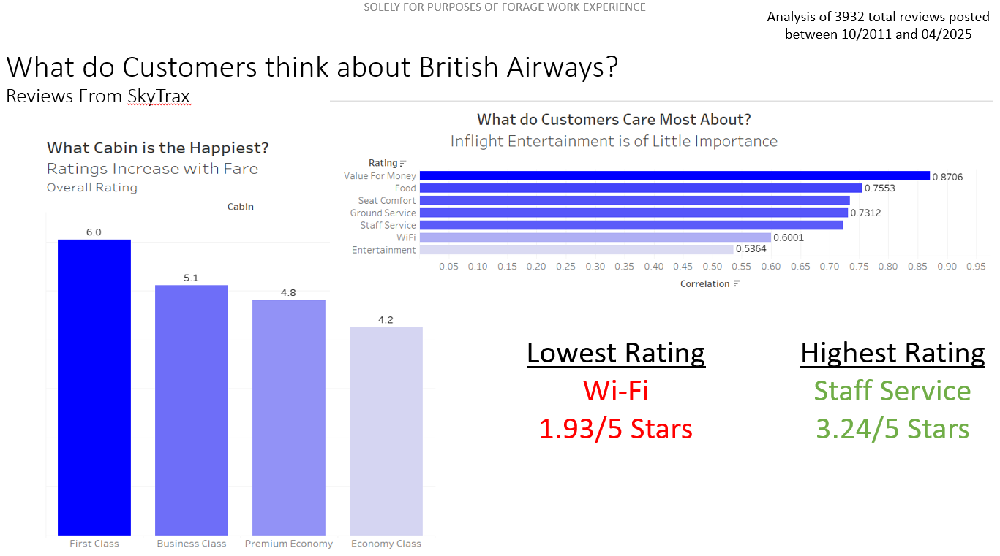

Software: Tableau, SQL. Cleaned and joined multiple datasets from Istat to create 3 Tableau dashboards that display information on Italy's economics, population, and wine production on a regional level.

Software: Excel, Tableau.
Analyzes the performance of America's three largest airlines—Delta, United, and American—across key financial and operational metrics for the year 2023. The goal was to identify which airline led the industry and what contributed to their success. Cleaned data with Excel and visualized findings with Tableau.

Software: Python (NumPy, Pandas, BeautifulSoup4, Scikit-learn), Tableau.
Scraped customer review data of British Airways from SkyTrax using BeautifulSoup, Analyzed data using Pandas, and visualized findings with Tableau to provide insights into consumer opinion of the flagship carrier. Built a predictive model with Scikit-learn to understand factors that impact booking behavior.

Software: Tableau. Created an interactive Tableau dashboard to view consumer credit card trends by card type and demographic.

Software: SQL, Tableau. Cleaned layoff data with SQL, creating ranks and rolling totals before illustrating trends in world layoffs from 2020-2023 with a Tableau dashboard that highlighted discrepancies based on industry and location

Software: Excel. Cleaned data with formulas and created pivot tables in Excel to display bike sale data in a comprehensive dashboard

Software: Python (Numpy, Matplotlib).
Built a simulated financial market populated by heterogeneous investors, each with a unique strategy for predicting asset prices. Investors make decisions based on historical price trends, expected dividends, and individual behavioral biases. Over time, their collective predictions determine the asset’s market price, capturing the dynamics of price formation under uncertainty.

Software: Python (Numpy, Pandas, Seaborn, Matplotlib).
This project evaluates the accuracy and rationality of professional unemployment rate forecasts using data from the Survey of Professional Forecasters (SPF). I performed data cleaning, transformation, and statistical simulation to assess how well these forecasts align with actual unemployment rates.

Software: Python (Pandas, NumPy, Matplotlib).
Models a social network of individuals with differing group identities and tracks how local group composition affects individual happiness. Each agent evaluates its surroundings and relocates if it isn't content. Social dynamics are analyzed in a controlled environment by exploring whether divergent groups form mixed communities or echo chambers.

Software: Tableau.
Utilized Tableau to identify the world’s deadliest natural disasters and what decades were most affected.